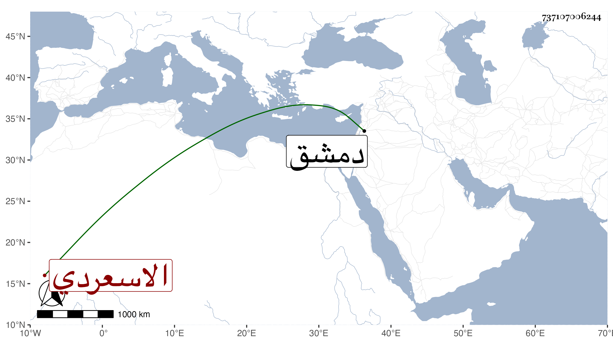

0902Sakhawi.DawLamic.ITO20230111-ara1.EIS1600.737107006244
Biography ID: 737107006244
441
حسن بن علي بن عمر البدر الاسعردي ، قال شيخنا في أنبائه صاحبنا بدر الدين كان من بيت نعمة وثروة فأحب سماع الحديث فسمع فأكثر وكتب الطباق وحصل الأجزاء وسمع من أصحاب التقي سليمان ونحوهم وأحب هذا الشأن وذهبت أجزاؤه في فتنة تمرلنك ، وقد رافقني في السماع وأعطاني أجزاء بخطه ، وبلغني أنه حدث بدمشق في سنة وفاته ببعض مسموعاته . ومات بها في ربيع الأول سنة تسع وكذا قال نحوه في المعجم . وتبعه المقريزي في عقوده .
